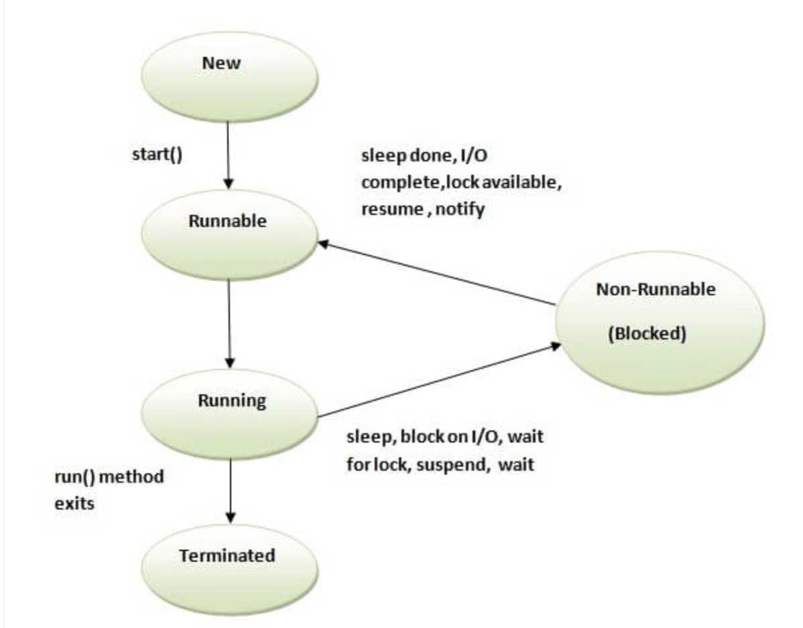

Java Multithreading in details
Work in progress...
Multithreading in Java
- Thread is basically a lightweight sub-process, a smallest unit of processing.
- Multithreading than multiprocessing because threads share a common memory area.
- They don't allocate separate memory area so saves memory, and context-switching between the threads takes less time than process.
- It doesn't block the user because threads are independent and you can perform multiple operations at same time.
Life cycle of a Thread (Thread States)
- thread life cycle in java new, runnable, non-runnable and terminated. There is no running state.
- 
- New -> The thread is in new state if you create an instance of Thread class but before the invocation of start() method.
- Runnable
- Running
- Non-Runnable (Blocked)
- Terminated
Thread class:
- Thread(); Thread(String name); Thread(Runnable r); Thread(Runnable r,String name)
- Commonly used methods of Thread class:
- public void run(): , public void start():, public void sleep(long miliseconds): ,
- public void join(): waits for a thread to die.:: join(long miliseconds): waits for a thread to die for the specified miliseconds./li>